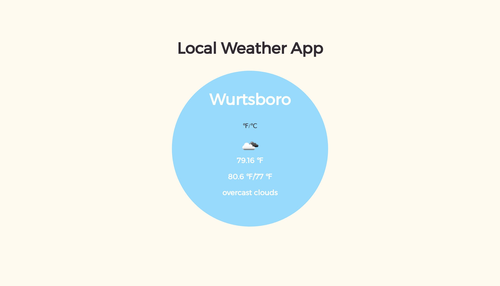
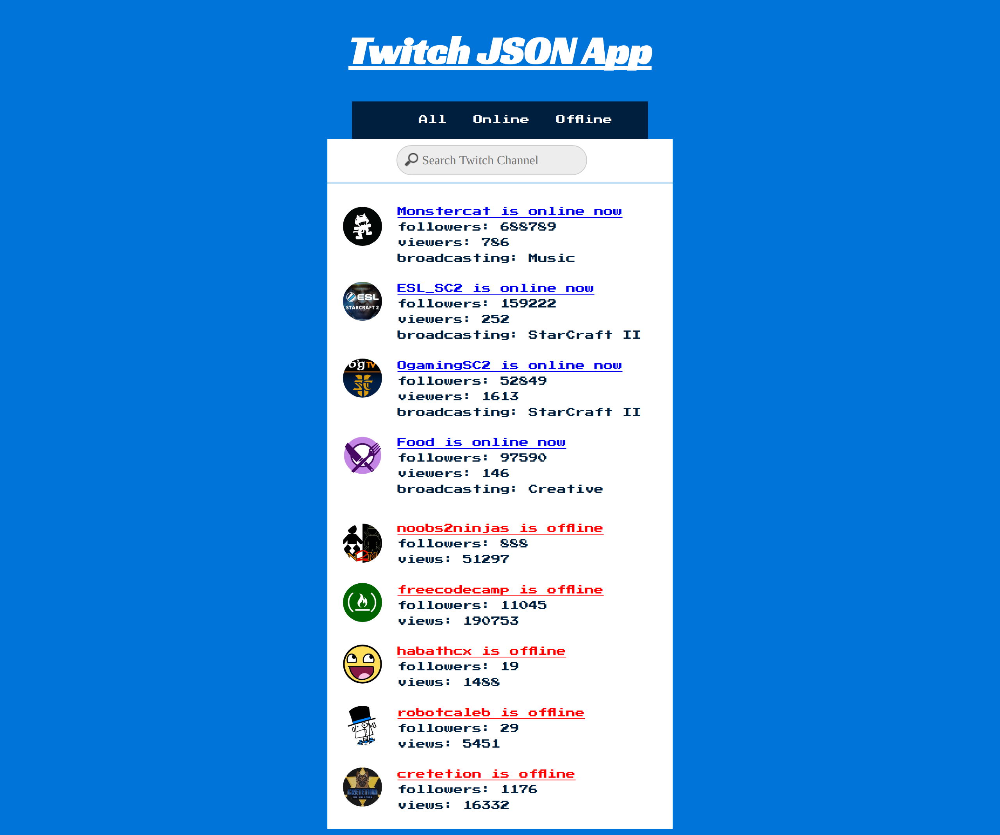

I'm a freelance web developer working in the metro NY area
My name is Nick and I am self taught web developer and student working on a computer science degree in New York City. I am also working on FreeCodeCamp's web development certificates. My interests include the MEAN stack, web design, and machine learning. Below are some of the recent projects I have been working on.
-

A simple weather app made with the OpenWeatherMap API that displays the user's current location, the current forecast, today's high/low temperature, a weather icon for the forecast, and both Fahrenheight and Celsius. Made for FreeCodeCamp's front-end program.
-

An app using the Twitch.tv JSON API to display a list of current Twitch streamers and whether or not their channel is currently online. I used JQuery to make the API call and display the name of the channel, basic information about what the channel is airing, the number of viewers and followers the channel has, and the channel's logo.
-

This project uses the Wikipedia API to allow the user to search a term on Wikipedia and display the results on the current page.
-
Bacon ipsum dolor amet pork loin sirloin ham brisket flank t-bone, turkey chicken cow drumstick burgdoggen ribeye kevin leberkas prosciutto. Picanha pork chop beef ribs drumstick, landjaeger swine strip steak biltong rump